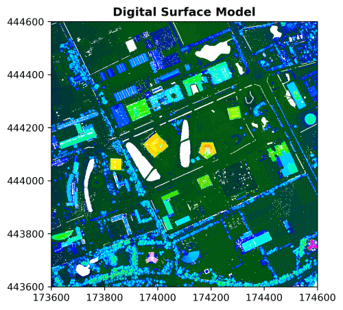

WUR Geoscripting

Week 3, Tutorial 10: Raster data handling with Python
Introduction
Today we will work with Python packages for spatial raster analysis. Python has some dedicated packages to handle rasters:
- OWSLib allows us to download geospatial raster data from Web Coverage Services
- GDAL is powerful library for reading, writing and warping raster datasets
- Rasterio reads and writes geospatial raster data
- rasterstats summarizes geospatial raster datasets based on vector geometries
- NumPy is fundamental package for scientific computing, such as array (thus raster) calculations
Learning objectives
- Be able to read spatial raster formats from web services and files
- Be able to write spatial raster formats to disk
- Know how to apply basic operations on raster data, such as arithmetics
- Be able to plot spatial raster data with Matplotlib
Setting up the Python Environment
Make a folder structure for this tutorial:
cd ~/Documents/
mkdir PythonRaster #or give the directory a name to your liking
cd ./PythonRaster
mkdir data
mkdir outputLike in the previous tutorials, we will create a conda environment
with a .yaml file:
name: raster
dependencies:
- python
- numpy
- matplotlib
- spyder
- owslib
- gdal
- geopandas
- rasterio
- rasterstats
- affine
- osmnxAfter creation, activate the environment, open Spyder, create a script in the root folder, and start coding.
Reading raster data and accessing metadata
From a Web Coverage Service
A Web Coverage Service (WCS) loads raster data in a similar way as Web Feature Services (WFS) load vector data. Web Coverage Services are a standard by the Open Geospatial Consortium and allow the downloading of geospatial raster data with multiple types of format encoding: GeoTIFF, netCDF, JPEG2000 etc. A Web Map Service [WMS] also exists for rasters; it allows downloading of images but without the data values.
Today we will work with elevation rasters. More specifically, we will have a look at the WCS of the AHN dataset. AHN stands for “Actueel Hoogtebestand Nederland” and is a Digital Elevation Model [DEM] that covers the Netherlands. Access the web coverage service to have a look at the contents:
from owslib.wcs import WebCoverageService
# Access the WCS by proving the url and optional arguments
wcs = WebCoverageService('http://geodata.nationaalgeoregister.nl/ahn3/wcs?service=WCS', version='1.0.0')
# Print to check the contents of the WCS
print(list(wcs.contents))Running the last line of code shows that the Web Coverage Service of
the AHN3 contains four rasters: 0.5m DSM, 0.5m DTM, 5m DSM, and 5m DTM.
Raster data of AHN has the projected coordinate system
RD_New (EPSG: 28992).
We can also check what types of operations are available for this WCS:
# Get all operations and print the name of each of them
print([op.name for op in wcs.operations])You will see that the Web Coverage Service allows accessing the data (GetCoverage), the metadata (DescribeCoverage), and the capabilities (GetCapabilities). These are all standard protocols defined by the OGC.
Several functions are available to access specific metadata of each individual raster, for example:
# Take the 0.5m DSM as an example
cvg = wcs.contents['ahn3_05m_dsm']
# Print supported reference systems, the bounding box defined in WGS 84 coordinates, and supported file formats
print(cvg.supportedCRS)
print(cvg.boundingBoxWGS84)
print(cvg.supportedFormats)Let us have a look at the data itself. As we do not want to overload the web service, we download once and store the data locally.
Download the Digital Surface Model [DSM], which is the the ‘ahn3_05m_dsm’ version, and Digital Terrain Model [DTM], which is the ‘ahn3_05m_dtm’ version, to a local file. The difference between a DEM, DSM and DTM is explained on the GIS StackExchange.
import os
# Define a bounding box in the available crs (see before) by picking a point and drawing a 1x1 km box around it
x, y = 174100, 444100
bbox = (x - 500, y - 500, x + 500, y + 500)
# Request the DSM data from the WCS
response = wcs.getCoverage(identifier='ahn3_05m_dsm', bbox=bbox, format='GEOTIFF_FLOAT32',
crs='urn:ogc:def:crs:EPSG::28992', resx=0.5, resy=0.5)
# Write the data to a local file in the 'data' folder
with open('data/AHN3_05m_DSM.tif', 'wb') as file:
file.write(response.read())
# Do the same for the DTM
response = wcs.getCoverage(identifier='ahn3_05m_dtm', bbox=bbox, format='GEOTIFF_FLOAT32',
crs='urn:ogc:def:crs:EPSG::28992', resx=0.5, resy=0.5)
with open('data/AHN3_05m_DTM.tif', 'wb') as file:
file.write(response.read())Before continuing, please check if this step was successful.
From a file with GDAL
GDAL handles raster and vector geospatial data formats with Python, Java, R and C APIs. When opening a raster file in gdal, the object has a hierarchical structure starting at the Dataset level. A Dataset has a Geotransform (metadata) and can contain one or more Bands. Each Band has a Data array and potentially Overviews.
Let us open the file we just saved. You will see you first get the dataset, and need to access the band (even though there is only one), before the data array can be accessed.
from osgeo import gdal
# Open dataset, gdal automatically selects the correct driver
ds = gdal.Open("data/AHN3_05m_DSM.tif" )
# Get the band (band number 1)
band = ds.GetRasterBand(1)
# Get the data array
data = band.ReadAsArray()
print(data)
# Delete objects to close the file
ds = NoneQuestion 1: Why do we set ds to None at the end of your script? What may happen if you do not do that?
The GDAL Python API is not the best documented Python module. Therefore, Rasterio is explained as an alternative raster data handling module.
From a file with Rasterio
Rasterio
reads and writes multiple raster formats based on GDAL, provides raster
processing functions based on NumPy arrays and GeoJSON, and integrates
Matplotlib in the module rasterio.plot for visualization.
Rasterio handles multiple bands, masking,
reprojecting,
and resampling.
The rest of the tutorial below is a complete route of handling a rasterdataset. We will use the DEMs from a the WCS for our study area, handle it with Rasterio, calculate new information (CHM), overlay it with vector data representing buildings and visualize it.
Let us read in the raster data we just stored from the WCS with
Rasterio and plot it with rasterio.plot:
import rasterio
from rasterio.plot import show
import matplotlib.pyplot as plt
# Open the two rasters
dsm = rasterio.open("data/AHN3_05m_DSM.tif", driver="GTiff")
dtm = rasterio.open("data/AHN3_05m_DTM.tif", driver="GTiff")
# Metadata functions from Rasterio
print(dsm.meta)
print(dtm.meta)
# Plot with rasterio.plot, which provides Matplotlib functionality
plt.figure(figsize=(5, 5), dpi=300) # adjust size and resolution
show(dsm, title='Digital Surface Model', cmap='gist_ncar')
Question 2: Adjust the code above to take a look at the DTM. Note the gaps that appear. What are these gaps?
The metadata shows the driver (GDAL’s way of knowing how to function with a specific file format), datatype, nodata value, width of raster in number of cells, height of raster in number of cells, number of raster bands in the dataset, coordinate reference system, and transformation values.
In the back-end, raster layers in Rasterio are stored as NumPy
arrays, which appear when the data are read with the method
.read():
# Rasterio object
print(type(dsm))
# Read, show object type and data
dsm_data = dsm.read(1)
print(type(dsm_data))
print(dsm_data)Processing raster data
Creating a Canopy Height Model
A Canopy Height Model (CHM) gives an indication of the height of trees and/or buildings. It can be created by subtracting a Digital Terrain Model from a Digital Surface Model. In the resulting raster, each cell value represents the height above the underlying surface topography.
import numpy as np
# Access the data from the two rasters
dsm_data = dsm.read()
dtm_data = dtm.read()
# Set our nodata to np.nan (this is important for later)
dsm_data[dsm_data == dsm.nodata] = np.nan
dtm_data[dtm_data == dtm.nodata] = np.nanEarlier, we noticed that the DTM included gaps. Let’s first fill
these gaps using the fillnodata() function from
rasterio.fill. For more information, see the documentation.
from rasterio.fill import fillnodata
# Create a mask to specify which pixels to fill (0=fill, 1=do not fill)
dtm_mask = dtm_data.copy()
dtm_mask[~np.isnan(dtm_data)] = 1
dtm_mask[np.isnan(dtm_data)] = 0
# Fill missing values
dtm_data = fillnodata(dtm_data, mask=dtm_mask)Now, let’s can create our CHM:
# Subtract the NumPy arrays
chm = dsm_data - dtm_data
# Check the resulting array
print(chm)
# Copy metadata of one of the rasters (does not matter which one)
kwargs = dsm.meta
# Save the chm as a raster
with rasterio.open('data/AHN3_05m_CHM.tif', 'w', **kwargs) as file:
file.write(chm.astype(rasterio.float32))Question 3: Where is the CHM the highest in the study area? Is it what you expected?
We have now applied the basic concepts of creating a Canopy Height Model!
Computing heights of buildings
Using our CHM, let’s determine the average heights of the buildings
in our study area. The first step is to download building data from the
BAG Web Feature Service that we also used in the vector tutorial. Note
that we make use of the bbox from an earlier codeblock for
this.
import geopandas as gpd
from requests import Request
# Extract only buildings on and around WUR campus
url = 'https://service.pdok.nl/lv/bag/wfs/v2_0'
layer = 'bag:pand' # see wfs.contents
bb = ','.join(map(str, bbox)) # string of bbox needed for the request url
# Specify the parameters for fetching the data
params = dict(service='WFS', version="1.1.0", request='GetFeature',
typeName=layer, outputFormat='json',
srsname='urn:ogc:def:crs:EPSG::28992', bbox=bb)
# Parse the URL with parameters
q = Request('GET', url, params=params).prepare().url
# Read data from URL
buildings_gdf = gpd.read_file(q)Question 4: What happens in the line “bb = ‘,’.join(map(str, bbox))”? Look up how mapping works if you do not know.
The next step is to perform zonal statistics to get the average
height value per building polygon. We will do this with the module
Rasterstats, which can use a GeoDataFrame and a
.tif file for this task. It outputs a GeoJSON.
import rasterstats as rs
# Apply the zonal statistics function with gdf and tif as input
chm_buildings = rs.zonal_stats(buildings_gdf, "data/AHN3_05m_CHM.tif", prefix='CHM_', geojson_out=True)
# Convert GeoJSON to GeoDataFrame
buildings_gdf = gpd.GeoDataFrame.from_features(chm_buildings)
# Check the added attributes with a prefix 'CHM_'
print(buildings_gdf['CHM_mean'])A quick visualization shows us the heights derived from the raster data on the map:
# Create one plot with figure size 10 by 10
fig, ax = plt.subplots(1, figsize=(10, 10))
# Customize figure with title, legend, and facecolor
ax.set_title('Heights above ground (m) of buildings on the WUR campus')
buildings_gdf.plot(ax=ax, column='CHM_mean', k=6,
cmap=plt.cm.viridis, linewidth=1, edgecolor='black', legend=True)
ax.set_facecolor("lightgray")
# Make sure to get an equal scale in the x and y direction
plt.axis('equal')
# Visualize figure
plt.show()
Question 5: Why do we want an equal scale in the x and y direction for this figure?
More on writing raster data to a file
As you’ve seen before, to store the NumPy array as a raster file, Rasterio needs the accompanying metadata. It is possible to use the metadata of an existing raster (which we did before), but it is also possible to create it from scratch.
To create metadata from scratch, the CRS can be defined with a function from Rasterio and the transformation can be defined using Affine. Affine is a Python module that facilitates affine transformations, i.e. scaling, rotating, mirroring or skewing of images/rasters/arrays.
Rasterio can write most raster formats from GDAL. The developers recommend using GeoTiff driver for writing as it is the best-tested and best-supported format.
import affine
# Specify the components of the crs (we know them from the DSM)
kwargs = {'driver': 'GTiff',
'dtype': 'float32',
'nodata': np.nan,
'width': 2000,
'height': 2000,
'count': 1,
'crs': rasterio.crs.CRS({'init': 'epsg:28992'}),
'transform': affine.Affine(0.5, 0.0, 173600.0, 0.0, -0.5, 444600.0)}
# Write the raster file
with rasterio.open('data/AHN3_05m_CHM_affine.tif', 'w', **kwargs) as file:
file.write(chm.astype(rasterio.float32))More on raster data visualization
Raster data can be visualized by passing NumPy arrays to Matplotlib directly or by making use of a method in Rasterio that accesses Matplotlib for you. Using Matplotlib directly allows more flexibility, such as tweaking the legend, axis and labels, and is more suitable for professional purposes. The visualization using Rasterio requires less code and can give a quick idea of your raster data. We show both approaches below. Let’s first make a visualization of the DSM using Matplotlib:
# Create one plot with figure size 10 by 10
fig, ax = plt.subplots(figsize=(10, 10), dpi=200)
# imshow() is the main raster plotting method in Matplotlib
# Again, ensure an equal scale in the x and y direction
dsmplot = ax.imshow(dsm_data[0], cmap='Oranges', extent=bbox, aspect='equal')
# Title (do not do this for a scientific report, use a caption instead)
ax.set_title("Digital Surface Model - WUR Campus", fontsize=14)
# Add a legend (colorbar) with label
cbar = fig.colorbar(dsmplot, fraction=0.035, pad=0.01)
cbar.ax.get_yaxis().labelpad = 15
cbar.ax.set_ylabel('Height (m)', rotation=90)
# Hide the axes
ax.set_axis_off()
plt.show()
If you do not like the orange colormap of Matplotlib, it is also possible to pick another colormap.
The second approach with Rasterio only requires one line of code to make a plot. By creating subplots, the figures can be combined (this can be done with Matplotlib directly as well).
# Figure with three subplots, unpack directly
fig, (axdsm, axdtm, axchm) = plt.subplots(1, 3, figsize=(15, 7), dpi=200)
# Populate the three subplots with raster data
show(dsm_data, ax=axdsm, title='DSM')
show(dtm_data, ax=axdtm, title='Filled DTM')
show(chm, ax=axchm, title='CHM')
plt.show()
Rasterio can also create simple histograms by calling functions of Matplotlib.
from rasterio.plot import show_hist
# Figure with three subplots, upack directly
fig, (axdsm, axdtm, axchm) = plt.subplots(1, 3, figsize=(15, 7), dpi=200)
# Populate the three subplots with histograms
show_hist(dsm_data, ax=axdsm, bins=100, lw=0.0, stacked=False, alpha=0.3, title="Histogram DSM")
show_hist(dtm_data, ax=axdtm, bins=100, lw=0.0, stacked=False, alpha=0.3, title="Histogram filled DTM")
show_hist(chm, ax=axchm, bins=100, lw=0.0, stacked=False, alpha=0.3, title="Histogram CHM")
# Build legends and show
axdsm.legend(['DSM'])
axdtm.legend(['Filled DTM'])
axchm.legend(['CHM'])
plt.show()
Question 6: What is represented on the x and y axis? The default axis labels are DN (x) and Frequency (y); if you were to change them, what labels would you pick to better reflect the content of the plots?